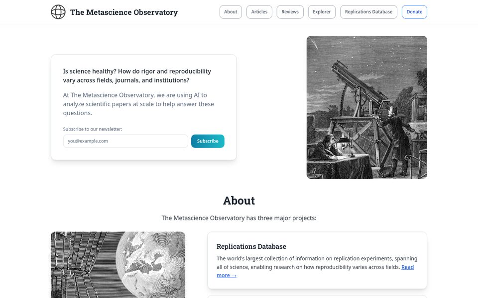
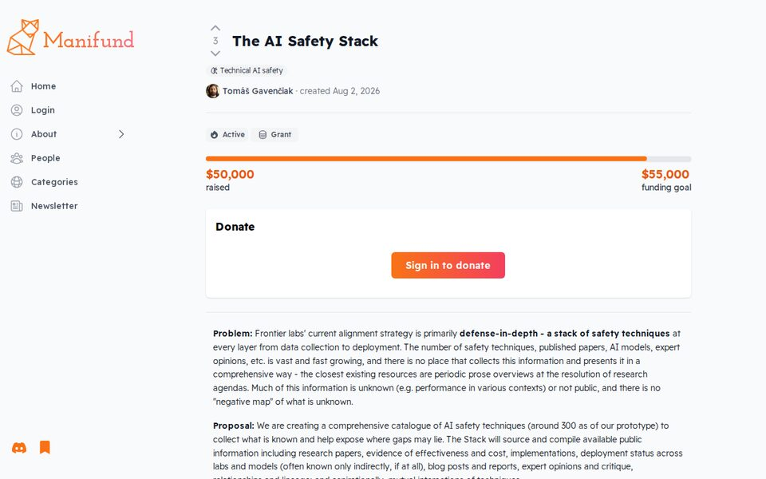
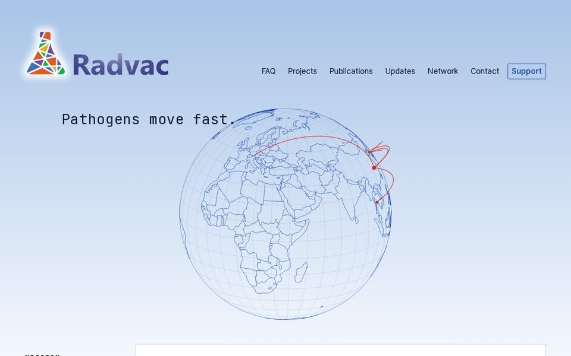
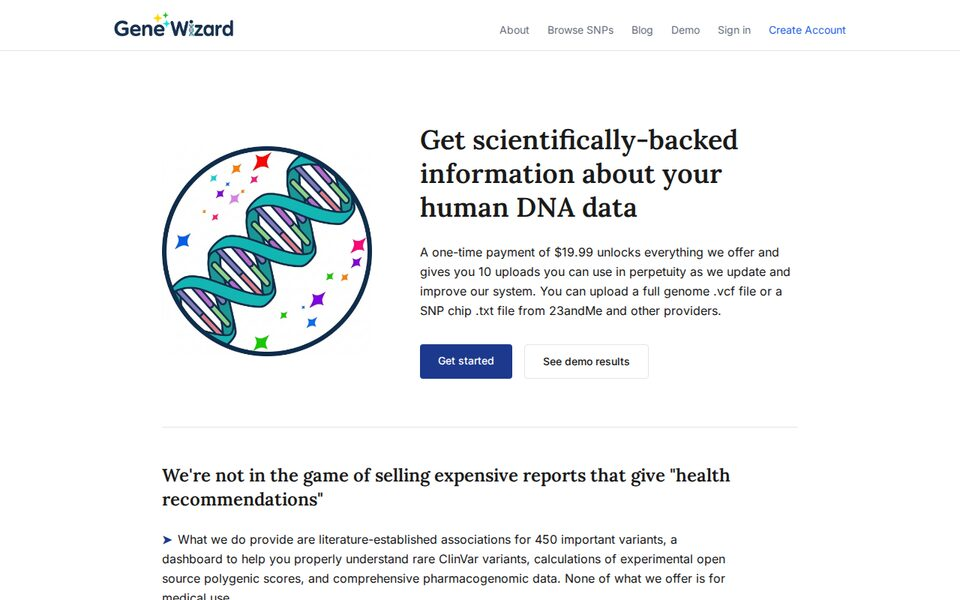
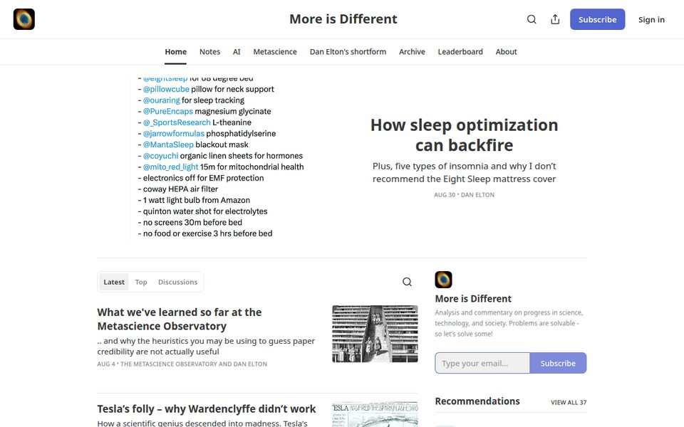

The Metascience Observatory
The Metascience Observatory has three projects:
our massive database of replications to study reproducibility issues in the scientific literature. Experiments with AI-powered literature review, the Bird's Eye Review.

Visit→
The Metascience Observatory
We're conducting a massive search to compile information about what AI safety techniques are being used at frontier labs.

Visit→
The AI Safety Stack
I'm an evangelist for Radvac's self-experimentation with a GMO yeast strain that produces viral proteins, and I also help maintain the website. Previously I did research at Radvac on AI for antiviral discovery.

Visit→
Radvac
Gene Wizard is a genetics education platform that provides literature-sourced information on variants, ClinVar annotations, and honest info on open source polygenic scores.

Visit→
Gene Wizard
Writing on AI, FDA reform, metascience, progress studies, and other topics.

Visit→
More Is Different